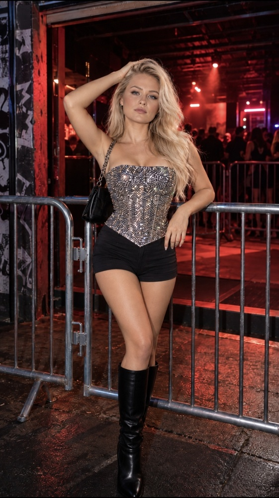

ВІТА
ГОЛОВНА
МУЗИКА
ПРО ВІТУ
ГАЛЕРЕЯ
КОНТАКТИ
УКР
/
ENG
ГОЛОВНА
МУЗИКА
ПРО ВІТУ
ГАЛЕРЕЯ
КОНТАКТИ
IG
TT
YT
SP
Галерея
ГАЛЕРЕЯ
ВІТА
Вона не уявляє майбутнє. Вона у ньому живе.
01 / Концертний Архів
02 / Фешн та Подіум
03 / Вдома
04 / Гість з 2525 року

05 / Поза кадром
06 / Мої Музиканти та Артисти